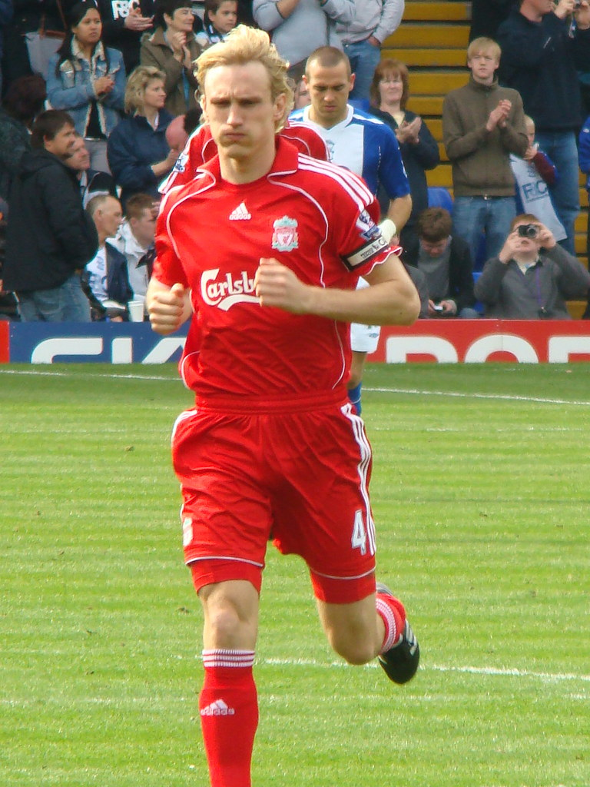

Kouvola on todellinen urheilukaupunki! Kouvolaan Suomen mestaruuksia on vuosien saatossa tullut muun muassa jalkapallosta, koripallosta ja pesäpallosta.
Entinen Liverpool-kapteeni Sami Hyypiä on myös Kouvolan Voikkaalta kotoisin.
| Seura | Laji | Pelipaikka |
|---|---|---|
| Jääkiekko | Kouvolan Jäähalli | |
| Pesäpallo | Kouvolan pesäpallostadion | |
| Jalkapallo | Saviniemen jalkapallostadion | |
| Koripallo | Mansikka-ahon urheiluhalli | |
| Salibandy | Manskari |